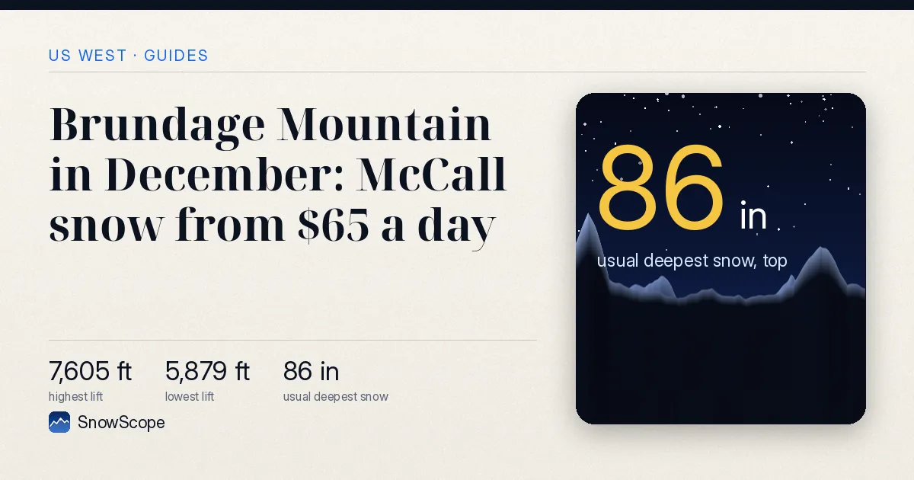
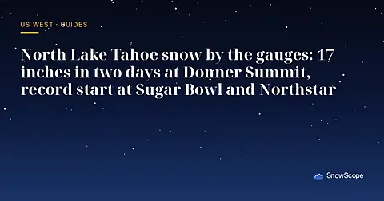

Brundage Mountain in December: McCall snow from $65 a day
Brundage sits above McCall, a quiet lake town in central Idaho, and offers one of the region's most dependable early-season snow records. Tickets start as low as $65 when you book ahead, making it an affordable choice for December skiing before the holiday premium kicks in.
See the live snow forecast for Brundage Mountain in the SnowScope appSnow depth, powder alerts and the 3D map, free.
The mountain and the town
Brundage rises north of Payette Lake, with 6 lifts and roughly 30 mi (49 km) of runs spread across 526 m of vertical. The base sits at 5,880 ft (1,792 m), mid-mountain around 6,740 ft (2,055 m), and the top at 7,600 ft (2,318 m). It is a small, locally-run area with a relaxed atmosphere and short lift lines on weekdays.
McCall itself is a mountain town with hotels, restaurants and shops. The drive from Boise follows the Payette River canyon—scenic but winding, so allow extra time and carry chains in winter.

When snow arrives and settles
Lasting snow usually reaches mid-mountain by mid-October. Through December, the chance of a skiable snow depth (20 in / 50 cm or more as a weekly average) grows steadily: 67 % of past winters have good cover in the first week of December, 85 % in the second week, 93 % in the third, and 96 % in the week around Christmas.
In actual depth, a typical 1 December has 22 in (55 cm) at mid-mountain; by 15 December that climbs to 30 in (77 cm), and by Christmas Day reaches 38 in (97 cm). At the base, the numbers are lower but still reliable: 17 in (43 cm) on 1 December and 22 in (57 cm) on 15 December, with 65 % of past winters exceeding 20 in by mid-month.

The trend: thinner early season
Snow depth in early December has declined slightly over time. In the first 15 winters of our 46-year record (1980–81 to 1994–95), mid-mountain typically held 33 in (83 cm) on 15 December. In the most recent 15 winters (2011–12 to 2025–26), that figure fell to 24 in (61 cm). The share of winters with good cover dropped from 93 % to 80 %.
Last winter (2025–26) underscored this shift: only 19 in (47 cm) lay at mid-mountain on 15 December. Early December is thinner now, so patience pays—wait until the second half of the month for a safer bet.
Ticket prices and pass options
Brundage uses dynamic pricing. Day tickets start as low as $65 on select dates but rise as your visit approaches. The holiday peak period runs from 19 December 2026 to 3 January 2027, when prices climb steeply.
If you plan multiple visits, the Indy Pass offers value: the Indy Base Pass costs $419 and grants two days at each of 300+ member areas (with blackout dates); the Indy+ Pass is $469 and removes blackouts. Brundage is a member.
Brundage, Schweitzer and Lookout Pass compared
The region has two other nearby options. Schweitzer Mountain, northeast of Brundage, sits lower overall but accumulates deeper snow at higher elevations: a typical 15 December brings 54 in (138 cm) at its mid-mountain. It offers a 3-Pack ticket for $249 (about $83 per day). Lookout Pass, south on the state border, has similar mid-mountain snow to Brundage—30 in (75 cm) on a typical 15 December—and sells midweek tickets at $63 when reserved in advance.
Brundage's advantage is consistency at lower elevations and flexibility in pricing. For a base-to-mid-mountain skier staying midweek in December, it offers solid snow odds and the lowest entry price among the three.
How to time your visit
Book tickets early: Brundage's prices reward advance planning. The second week of December (starting around 7 December) has 85 % odds of good snow and sits before the holiday surge. The third week—14 to 20 December—offers even better coverage (93 %) while prices are still lower than the peak period.
If you are flexible, stay away from 19 December onward. If you must ski Christmas week, expect higher prices but excellent snow depth: 38 in (97 cm) at mid-mountain is typical on 25 December, and 96 % of past winters exceeded 20 in on that date.
Tips for skiers
- Buy your ticket at least two to three weeks ahead to lock in the $65 base price; Brundage's dynamic system charges more for last-minute bookings.
- Target the second or third week of December for the best combination of snow depth and lower prices; skip the 19 December to 3 January peak period if your dates are flexible.
- At mid-mountain (6,740 ft / 2,055 m), you are most likely to find skiable snow through December. The base is thinner; check conditions before driving if you plan to ski early in the month.
- The Payette River canyon road can be icy; allow extra travel time from Boise and carry or rent chains, even if the forecast looks clear.
- For current avalanche conditions if you plan to leave the marked runs, check the official bulletin at avalanche.org.
About these numbers
Resort snow depths are the deepest snow on the resort's upper slopes on the date shown; they are estimates for an area, not a measurement at one point. Forecasts can change. Always read the official avalanche bulletin before going off-piste.
Official avalanche bulletins: avalanche.org (US national portal)
Cite this report
For research, teaching or the press: the numbers and charts are free to reuse under CC BY 4.0 with this citation.
SnowScope (2026), Brundage Mountain in December: McCall snow from $65 a day, https://snowscope.app/blog/en/2026/11/brundage-mountain-mccall-december-ski-budget.html, accessed 2026-11-14
SnowScope (Atlas Labs). (2026, November 14). Brundage Mountain in December: McCall snow from $65 a day. SnowScope snow reports. https://snowscope.app/blog/en/2026/11/brundage-mountain-mccall-december-ski-budget.html
BibTeX
@misc{snowscope2026brundagemountainmccallde,
author = {{SnowScope (Atlas Labs)}},
title = {Brundage Mountain in December: McCall snow from $65 a day},
year = {2026},
month = nov,
howpublished = {\url{https://snowscope.app/blog/en/2026/11/brundage-mountain-mccall-december-ski-budget.html}},
note = {Published 2026-11-14 20:07 UTC; accessed 2026-11-14}
}· CC BY 4.0 · Methods, data and tools →
Brundage Mountain: snow and temperature by height, this winter vs last (tools) →
Follow Brundage Mountain
Free: a message when fresh snow is coming, and the forecast every morning.
More snow reports

What the measured snow gauges say about the North Lake Tahoe storm, why the first snow is heavy and wet, and how Sugar Bowl, Northstar and Diamond Peak compare with 46 winters.

Snow above 1,500 m covers only 11% of the US West high ground. The snow line ranges from 2,000 m in the Cascades to 3,200 m in New Mexico, seen from space on 13 November 2026.

About 28 inches of new snow at Mammoth and 26 inches at June Mountain on 18-19 November. What the storm is, how it ranks against past winters, and the best days to go.